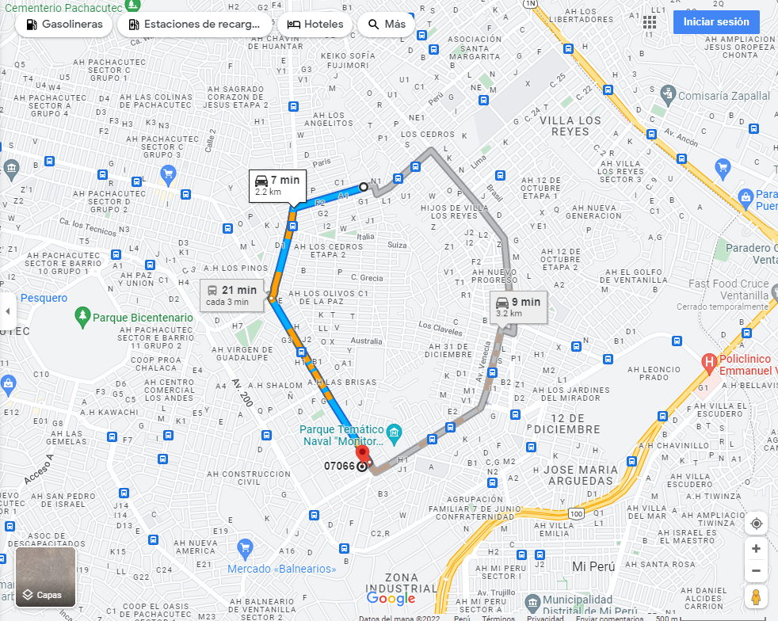

🖥️ Programas
- Word: ★ ★ ★ ★ ☆
- Excel: ★ ★ ☆ ☆ ☆
- PowerPoint: ★ ★ ☆ ☆ ☆
- Java: ★ ★ ★ ☆ ☆
- Python: ★ ★ ★ ☆ ☆
_____________________________________
Ubicación
Walter Eduardo
Huarcaya Mejia
👤 SOBRE MI
Hola, mi nombre es Walter Eduardo Huarcaya Mejia y esta es mi hoja de vida. Actualmente llevo la carrera de Ingenieria de Software con IA en el instituto SENATI. Escogi esta carrera porque desde pequeño me gusta el mundo de la tecnologia y el software. Fuera del mundo estudiantil me gusta salir con mis amigos, me gusta mucho el futbol y los videojuegos.
💼 COMPETENCIAS
Taller de electronica:
Estudie 3 años el curso de Electronica en mi escuela secundaria.
Taller de Administracion:
Estudie 2 años el curso de Administracion en mi escuela secundaria.
✏️ EDUCACIÓN
Senati:
Actualmente en el 2do Ciclo, llevando la carrera de Ingenieria de Software con IA.
Fe y Alegria:
Estudie incial, primaria y secundaria en esta institucion educativa.